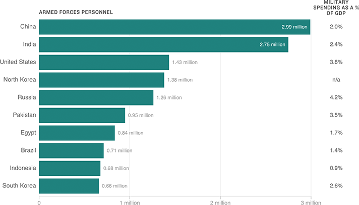

Countries With The Most Armed Forces Personnel (2013)

Notes
Armed forces personnel are active duty military personnel, including paramilitary forces if the training, organization, equipment, and control suggest they may be used to support or replace regular military forces.